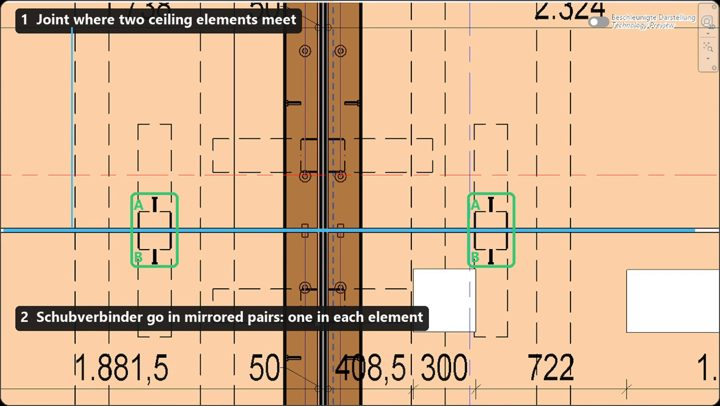

Schubverbinder
Shear connectors placed by rules, clear of the formwork

Neighbouring timber-concrete ceiling elements are tied together by shear connectors. This add-in finds every joint between K-DH ceilings from their geometry, then places mirrored connector pairs along each one. How many, and how far from the ends, depends on the joint's length and the ceiling type. Pairs then shift to keep at least 300 mm from any formwork cone already in the model, or fall back to the midpoint between two cones.
The placement rules
| Joint | Connectors | Offset from each end |
|---|---|---|
| Long edge, K-DH-01-00002 / 00003 | 2 pairs | 780 mm |
| Long edge, K-DH-01-00005 | 2 pairs | 1190 mm |
| Long edge, K-DH-01-00004 | 2 pairs | 1430 mm |
| Short edge, under 1200 mm | 1 pair | centred |
| Short edge, 1200 mm or more | 2 pairs | 350 mm |
From geometry to placement
- Find joints: compare K-DH ceilings for parallel edges overlapping at least 700 mm and no more than 60 mm apart.
- Pick the rule: classify the edge as long or short, and read the offset from the ceiling subtype.
- Place mirrored pairs: one connector on each side of the joint.
- Avoid the cones: slide pairs outward to keep 300 mm from existing Schalungskegel, or use the midpoint between two cones about 600 mm apart.
- Group: collect everything under one group, in a single transaction that Ctrl+Z can undo.
Design decisions
Works with SchalungskegelIt reads the cones the sister add-in placed, so the two rule sets don't collide.
Checks before it actsCeilings over 14 faces are rejected, and workshared projects must own the ceilings first.
All or nothingA single transaction keeps the model clean if anything goes wrong.